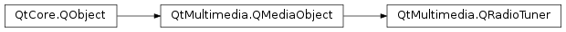

QRadioTuner¶
Synopsis¶
Functions¶
- def
band() - def
error() - def
errorString() - def
frequency() - def
frequencyRange(band) - def
frequencyStep(band) - def
isAntennaConnected() - def
isBandSupported(b) - def
isMuted() - def
isSearching() - def
isStereo() - def
radioData() - def
setStereoMode(mode) - def
signalStrength() - def
state() - def
stereoMode() - def
volume()
Slots¶
- def
cancelSearch() - def
searchAllStations([searchMode=QRadioTuner.SearchFast]) - def
searchBackward() - def
searchForward() - def
setBand(band) - def
setFrequency(frequency) - def
setMuted(muted) - def
setVolume(volume) - def
start() - def
stop()
Signals¶
- def
antennaConnectedChanged(connectionStatus) - def
bandChanged(band) - def
error(error) - def
frequencyChanged(frequency) - def
mutedChanged(muted) - def
searchingChanged(searching) - def
signalStrengthChanged(signalStrength) - def
stateChanged(state) - def
stationFound(frequency, stationId) - def
stereoStatusChanged(stereo) - def
volumeChanged(volume)
Detailed Description¶
The
PySide2.QtMultimedia.QRadioTunerclass provides an interface to the systems analog radio device.You can control the systems analog radio device using this interface, for example:
radio = new QRadioTuner; connect(radio, SIGNAL(frequencyChanged(int)), this, SLOT(freqChanged(int))); if (radio->isBandSupported(QRadioTuner::FM)) { radio->setBand(QRadioTuner::FM); radio->setFrequency(yourRadioStationFrequency); radio->setVolume(100); radio->start(); }The radio object will emit signals for any changes in state such as:
PySide2.QtMultimedia.QRadioTuner.bandChanged(),PySide2.QtMultimedia.QRadioTuner.frequencyChanged(),PySide2.QtMultimedia.QRadioTuner.stereoStatusChanged(),PySide2.QtMultimedia.QRadioTuner.searchingChanged(),PySide2.QtMultimedia.QRadioTuner.signalStrengthChanged(),PySide2.QtMultimedia.QRadioTuner.volumeChanged(),PySide2.QtMultimedia.QRadioTuner.mutedChanged().You can change between the frequency bands using
PySide2.QtMultimedia.QRadioTuner.setBand()however it is recommended that you check to make sure the band is available first usingPySide2.QtMultimedia.QRadioTuner.isBandSupported().
-
class
PySide2.QtMultimedia.QRadioTuner([parent=nullptr])¶ Parameters: parent – PySide2.QtCore.QObjectConstructs a radio tuner based on a media service allocated by the default media service provider.
The
parentis passed toPySide2.QtMultimedia.QMediaObject.
-
PySide2.QtMultimedia.QRadioTuner.State¶ Enumerates radio tuner states.
Constant Description QRadioTuner.ActiveState The tuner is started and active. QRadioTuner.StoppedState The tuner device is stopped.
-
PySide2.QtMultimedia.QRadioTuner.Band¶ Enumerates radio frequency bands.
Constant Description QRadioTuner.AM 520 to 1610 kHz, 9 or 10kHz channel spacing, extended 1610 to 1710 kHz QRadioTuner.FM 87.5 to 108.0 MHz, except Japan 76-90 MHz QRadioTuner.SW 1.711 to 30.0 MHz, divided into 15 bands. 5kHz channel spacing QRadioTuner.LW 148.5 to 283.5 kHz, 9kHz channel spacing (Europe, Africa, Asia) QRadioTuner.FM2 range not defined, used when area supports more than one FM range.
-
PySide2.QtMultimedia.QRadioTuner.Error¶ Enumerates radio tuner error conditions.
Constant Description QRadioTuner.NoError No errors have occurred. QRadioTuner.ResourceError There is no radio service available. QRadioTuner.OpenError Unable to open radio device. QRadioTuner.OutOfRangeError An attempt to set a frequency or band that is not supported by radio device.
-
PySide2.QtMultimedia.QRadioTuner.StereoMode¶ Enumerates radio tuner policy for receiving stereo signals.
Constant Description QRadioTuner.ForceStereo Provide stereo mode, converting if required. QRadioTuner.ForceMono Provide mono mode, converting if required. QRadioTuner.Auto Uses the stereo mode matching the station.
-
PySide2.QtMultimedia.QRadioTuner.SearchMode¶ Enumerates how the radio tuner should search for stations.
Constant Description QRadioTuner.SearchFast Use only signal strength when searching. QRadioTuner.SearchGetStationId After finding a strong signal, wait for the RDS station id (PI) before continuing.
-
PySide2.QtMultimedia.QRadioTuner.antennaConnectedChanged(connectionStatus)¶ Parameters: connectionStatus – PySide2.QtCore.bool
-
PySide2.QtMultimedia.QRadioTuner.band()¶ Return type: PySide2.QtMultimedia.QRadioTuner.Band
-
PySide2.QtMultimedia.QRadioTuner.bandChanged(band)¶ Parameters: band – PySide2.QtMultimedia.QRadioTuner.Band
-
PySide2.QtMultimedia.QRadioTuner.cancelSearch()¶ Stops scanning for a signal.
-
PySide2.QtMultimedia.QRadioTuner.error(error)¶ Parameters: error – PySide2.QtMultimedia.QRadioTuner.Error
-
PySide2.QtMultimedia.QRadioTuner.error() Return type: PySide2.QtMultimedia.QRadioTuner.ErrorReturns the error state of a radio tuner.
-
PySide2.QtMultimedia.QRadioTuner.errorString()¶ Return type: unicode Returns a description of a radio tuner’s error state.
-
PySide2.QtMultimedia.QRadioTuner.frequency()¶ Return type: PySide2.QtCore.int
-
PySide2.QtMultimedia.QRadioTuner.frequencyChanged(frequency)¶ Parameters: frequency – PySide2.QtCore.int
-
PySide2.QtMultimedia.QRadioTuner.frequencyRange(band)¶ Parameters: band – PySide2.QtMultimedia.QRadioTuner.BandReturn type: Returns a frequency
band‘s minimum and maximum frequency.
-
PySide2.QtMultimedia.QRadioTuner.frequencyStep(band)¶ Parameters: band – PySide2.QtMultimedia.QRadioTuner.BandReturn type: PySide2.QtCore.intReturns the number of Hertz to increment the frequency by when stepping through frequencies within a given
band.
-
PySide2.QtMultimedia.QRadioTuner.isAntennaConnected()¶ Return type: PySide2.QtCore.bool
-
PySide2.QtMultimedia.QRadioTuner.isBandSupported(b)¶ Parameters: b – PySide2.QtMultimedia.QRadioTuner.BandReturn type: PySide2.QtCore.boolIdentifies if a frequency
bandis supported by a radio tuner.Returns true if the band is supported, and false if it is not.
-
PySide2.QtMultimedia.QRadioTuner.isMuted()¶ Return type: PySide2.QtCore.bool
-
PySide2.QtMultimedia.QRadioTuner.isSearching()¶ Return type: PySide2.QtCore.bool
-
PySide2.QtMultimedia.QRadioTuner.isStereo()¶ Return type: PySide2.QtCore.bool
-
PySide2.QtMultimedia.QRadioTuner.mutedChanged(muted)¶ Parameters: muted – PySide2.QtCore.bool
-
PySide2.QtMultimedia.QRadioTuner.radioData()¶ Return type: PySide2.QtMultimedia.QRadioData
-
PySide2.QtMultimedia.QRadioTuner.searchAllStations([searchMode=QRadioTuner.SearchFast])¶ Parameters: searchMode – PySide2.QtMultimedia.QRadioTuner.SearchModeSearch all stations in current band
Emits
QRadioTuner.stationFound(int,PySide2.QtCore.QString) for every found station. After searching is completed,QRadioTuner.searchingChanged(bool) is emitted (false). IfsearchModeis set toSearchGetStationId, searching waits for station id (PI) on each frequency.
-
PySide2.QtMultimedia.QRadioTuner.searchBackward()¶ Starts a backwards scan for a signal, starting from the current
PySide2.QtMultimedia.QRadioTuner.frequency().
-
PySide2.QtMultimedia.QRadioTuner.searchForward()¶ Starts a forward scan for a signal, starting from the current
PySide2.QtMultimedia.QRadioTuner.frequency().
-
PySide2.QtMultimedia.QRadioTuner.searchingChanged(searching)¶ Parameters: searching – PySide2.QtCore.bool
-
PySide2.QtMultimedia.QRadioTuner.setBand(band)¶ Parameters: band – PySide2.QtMultimedia.QRadioTuner.BandSets a radio tuner’s frequency
band.Changing the band will reset the
PySide2.QtMultimedia.QRadioTuner.frequency()to the new band’s minimum frequency.
-
PySide2.QtMultimedia.QRadioTuner.setFrequency(frequency)¶ Parameters: frequency – PySide2.QtCore.intSets a radio tuner’s
frequency.If the tuner is set to a frequency outside the current
PySide2.QtMultimedia.QRadioTuner.band(), the band will be changed to one occupied by the new frequency.
-
PySide2.QtMultimedia.QRadioTuner.setMuted(muted)¶ Parameters: muted – PySide2.QtCore.bool
-
PySide2.QtMultimedia.QRadioTuner.setStereoMode(mode)¶ Parameters: mode – PySide2.QtMultimedia.QRadioTuner.StereoMode
-
PySide2.QtMultimedia.QRadioTuner.setVolume(volume)¶ Parameters: volume – PySide2.QtCore.int
-
PySide2.QtMultimedia.QRadioTuner.signalStrength()¶ Return type: PySide2.QtCore.int
-
PySide2.QtMultimedia.QRadioTuner.signalStrengthChanged(signalStrength)¶ Parameters: signalStrength – PySide2.QtCore.int
-
PySide2.QtMultimedia.QRadioTuner.start()¶ Activate the radio device.
-
PySide2.QtMultimedia.QRadioTuner.state()¶ Return type: PySide2.QtMultimedia.QRadioTuner.State
-
PySide2.QtMultimedia.QRadioTuner.stateChanged(state)¶ Parameters: state – PySide2.QtMultimedia.QRadioTuner.State
-
PySide2.QtMultimedia.QRadioTuner.stationFound(frequency, stationId)¶ Parameters: - frequency –
PySide2.QtCore.int - stationId – unicode
- frequency –
-
PySide2.QtMultimedia.QRadioTuner.stereoMode()¶ Return type: PySide2.QtMultimedia.QRadioTuner.StereoMode
-
PySide2.QtMultimedia.QRadioTuner.stereoStatusChanged(stereo)¶ Parameters: stereo – PySide2.QtCore.bool
-
PySide2.QtMultimedia.QRadioTuner.stop()¶ Deactivate the radio device.
-
PySide2.QtMultimedia.QRadioTuner.volume()¶ Return type: PySide2.QtCore.int
-
PySide2.QtMultimedia.QRadioTuner.volumeChanged(volume)¶ Parameters: volume – PySide2.QtCore.int
© 2018 The Qt Company Ltd. Documentation contributions included herein are the copyrights of their respective owners. The documentation provided herein is licensed under the terms of the GNU Free Documentation License version 1.3 as published by the Free Software Foundation. Qt and respective logos are trademarks of The Qt Company Ltd. in Finland and/or other countries worldwide. All other trademarks are property of their respective owners.